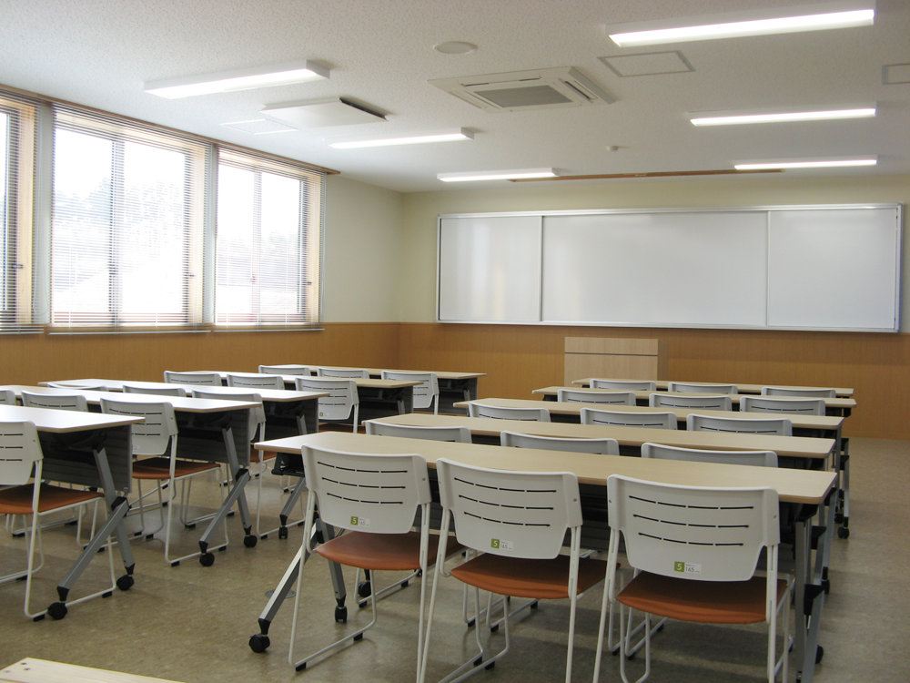
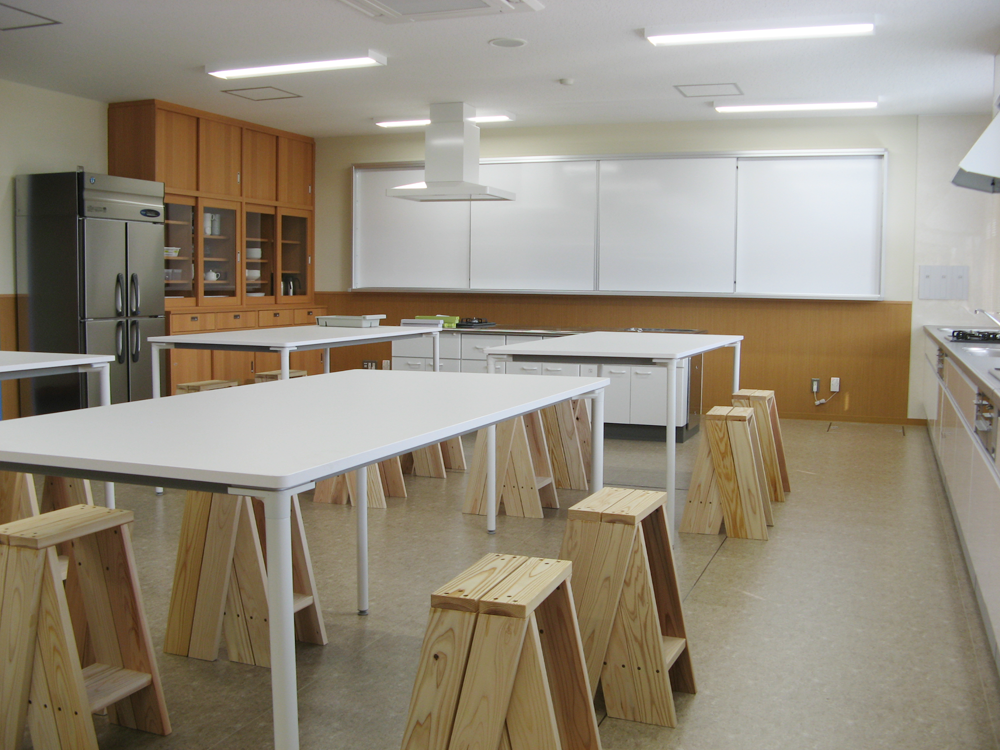
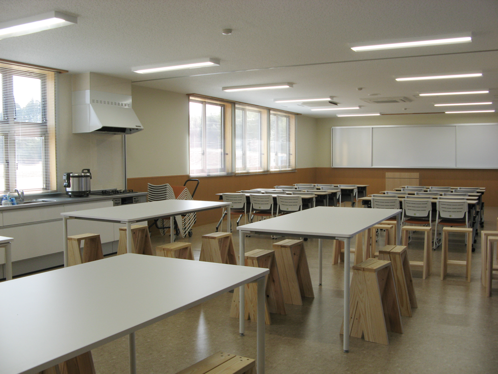

石巻・川のビジターセンターでは、レクチャールームなどのスペースを無料で貸出ししております。
自然環境保護に関するセミナーや自然体験プログラムなどのイベントにご利用ください。
－研修室－

セミナー、講習、研修などにご利用いただけます。
- 備品
- ホワイトボード 折り畳みテーブル10台（3人掛け） イス30脚 プロジェクター1台
－実習室－

実験、工作、料理教室などにご利用いただけます。
- 備品
- ホワイトボード、テーブル4台（4人掛け）、イス24脚、プロジェクター1台、キッチン2台（うち講師用1台）、調理器具一式
－ご利用案内－

「石巻・川のビジターセンター施設使用規則」をご覧いただき、石巻・川のビジターセンターまでをお電話下さい。
※施設使用規則にそぐわない場合、使用をお断りする場合がございます。
- 施設利用規定
PDFダウンロード（66KB）
- 施設利用申請書
PDFダウンロード（41KB）
- 施設利用心得
PDFダウンロード（489KB）
- 施設利用手引
PDFダウンロード（966KB）
- お問い合わせ
- 電話：0225-24-6506
※メールでのお問い合せは＜こちら＞